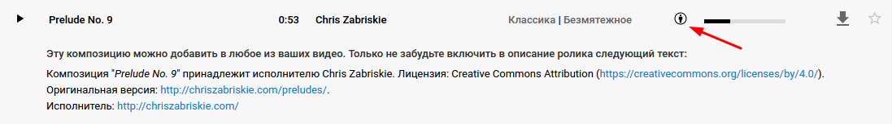
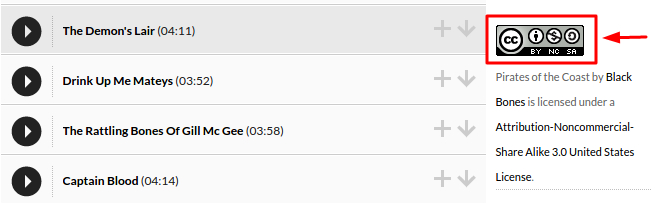
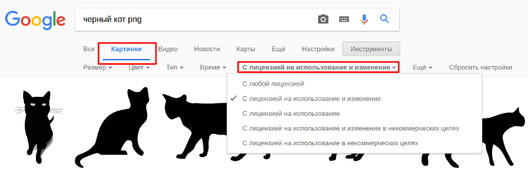

Бесплатные аналоги платных программ и сервисов
Я составила личный список бесплатных программ, которыми я пользуюсь в повседневной жизни для Windows и Linux. А также, хочу поделиться сервисами с бесплатной музыкой и картинками. Список будет пополняться с появлением новых и удобных для меня программ и сервисов.
Видео
VLC media player - мой долгожитель. В Linux и Windows один из часто используемых плееров. Стабильно работает уже много лет. Только в Linux Mint 18 есть небольшой баг. По неизвестной причине, не всегда срабатывает функция "поверх всех окон". Галка стоит, но плеер упорно не перекрывает другие открытые окна.
Media Player Classic (MPC) - на платформе Windows использовался постоянно. Стабильный, с возможностью просмотра CD. Дизайн, на мой взгляд, немного грубоват, в сравнении с VLC. Но на вкус и цвет... как говорится.
KMPlayer - когда-то на винде использовала только его. Удобно было создавать плей-листы, без долгих настроек и танцев с бубном открывались все файлы. Но, со временем появилась навязчивая реклама, стала слетать русская дорожка по default. И при миграции на linux я просто не взяла его с собой.
QuickTime Player - плеер поддерживает видео в формате 3GPP. Но в основном я использую QuickTime из-за набора кодеков. Когда монтировала видео в Adobe Premiere, конечный результат сохраняла с использованием этого кодека. QuickTime поддерживает компрессию видео H.264, что помогает при сохранении качества, значительно уменьшить объем итогового файла.
Аудио
AIMP - отличный аудиопроигрыватель, который прижился не только в винде, но и в смартфоне на android. К сожалению, музыку, в основном, слушаю только на телефоне, поэтому большого опыта тестирования различных аудиоплееров не было.
Banshee - был в комплекте с Linux Mint. Если нужно что-то прослушать, то пользуюсь им. Функции свои выполняет. Но назвать любимчиком не могу.
Бесплатная музыка в сети
Музыка на youtube. Для обучающих видео роликов музыку я беру из фонотеки ютуба. Путь до фонотеки: "мой канал" -> "менеджер видео" -> "создать" -> "фонотека". Музыку можно перед скачиванием послушать. Обратите внимание! Если в строке с муз. треком Вы видите этого человечка:  при использовании музыкального произведения необходимо разместить текст в описании, который приведен на картинке.
В любом случае, фонотека огромная, и в ней можно найти музыку на любой вкус.
Audionautix - сайт с лицензией Creative Commons 3.0. То есть, вы можете свободно копировать и делать ремиксы, использовать в коммерческих целях. Не забывайте только указывать авторство используемых музыкальных произведений. Поиск на сайте устроен таким образом, что вы можете отфильтровать не только по музыкальному направлению, но и по темпу, настроению. Есть из чего выбрать.
Ccmixter - сайт с бесплатной музыкой для фильмов, видео, игр и прочее. Очень приличная музыка.
Free Music Archive - на сайте музыка распространяется по лицензии Creative Commons. Перед использованием провертьте, какой подтип лицензии используется. Например, свободно использовать в коммерческих цецлях, делать ремикс, или только для некоммерческого использования с обязательным указанием авторства и проч. У каждого трека и альбома справа есть ссылка на тип лицензии:  Если перейти по этой ссылке на сайт с лицензией, можно подробно прочитать про условия использования.
Freesound - бесплатная библиотека звуков. Распространяется по лицензии Creative Commons 3.0. Если вам необходимо вставить в видео, например, звуки поющих птиц, электродвигатели и проч., все можно найти на этом сайте.
Изображения
GIMP - бесплатный аналог Photoshop. К сожалению, я слишком много времени проводила в фотошопе, поэтому мне тяжело перестроиться на любой другой редактор. Несмотря на это, в GIMP можно работать с цветом, слоями и др. Но интерфейс, конечно, по сравнению с фотошопом, деревянный. В linux все равно альтернативы особой нет. Так что, GIMP для небольшой корректировки вполне подходит. Но, думаю, профессионалам комфортнее с фотошопом.
Xviewer - просмотрщик изображений. Использую на Linux. Распознает даже raw формат, но с небольшой оговоркой. Если в альбоме несколько файлов с таким форматом, программа не даст навигироваться по ним с помощью стрелок. То есть, просматривать фото придется по одному. Если открыть альбом с jpg файлами, то перелистывание стрелками работает. Большим неудобством не считаю, так как raw файлы я просматриваю в других редакторах. А для беглого просмотра парочки фотографий мне большего не нужно.
LightShot - расширение в браузере (Chrome, Firefox, IE и Opera.) для создания скриншота в сети. Есть возможность выбрать размер скрина (ручное перетаскивание/выделение рамки),добавить в скрин стрелки, подчеркнуть текст, обвести и прочее. Сохраняет как в облаке, так и на компьютере. Очень быстрый и удобный. Можно установить на Windows и Mac. Это позволит делать снимки не только в браузере, но и вне его. Для linux варианты еще рассматриваю.
Теперь о сервисах с изображениями
Flaticon - большая база бесплатных иконок, доступных в PNG, SVG, EPS, PSD и БАЗЕ 64 форматов. Пока писала сайт, пользовалась сайтом постоянно. Иконкам можно задавать пользовательский цвет и размер. Поиск работает только на английском языке. Рекомендую.
Google картинки - самый быстрый способ найти бесплатную картинку. В поисковике гугла набрали запрос, перешли в раздел "картинки". Ниже, под запросом нажали "инструменты". И в меню выбрали любую лицензию, что Вам по душе. См. картинку ниже: 
Опубликовано: